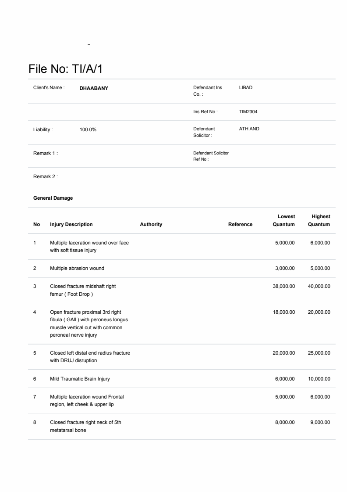
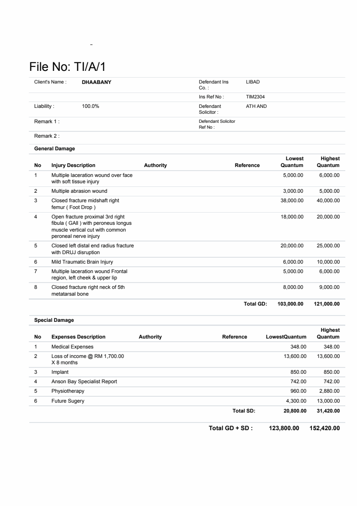
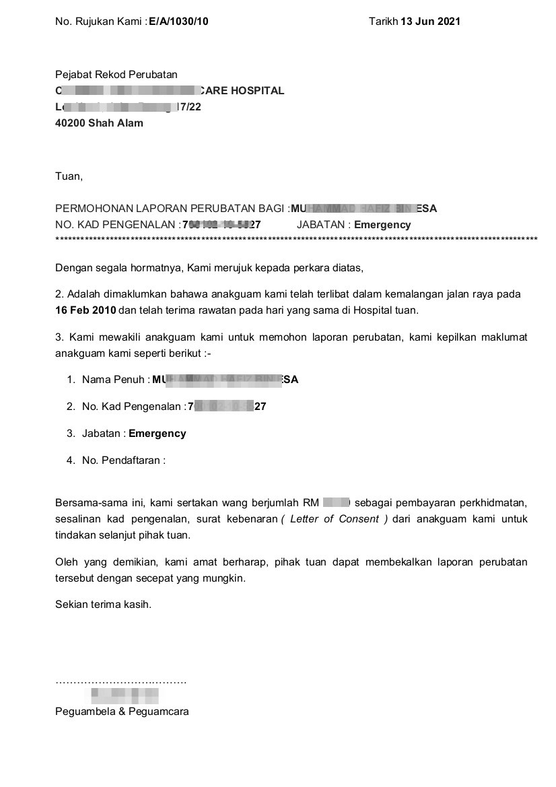
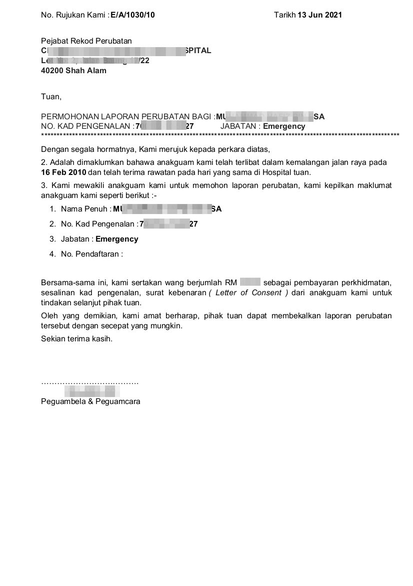

https://www.qtencomputer.com
Reduce Report Line Height / line spacing and Margin.
For Listing report using Table tag, this will reduce the row spacing, then you can show more information in one page.
| Before |
After |
|
|
Before reducing, it only print some line of records. After reducing, it print all records in one page. But this row spacing will over-write by putting padding in Table column. |
 |
 |
For report printing using html field.
| Before | After | |
| this will reduce the line spacing, thus you may put letter head as well. |
 |
 |